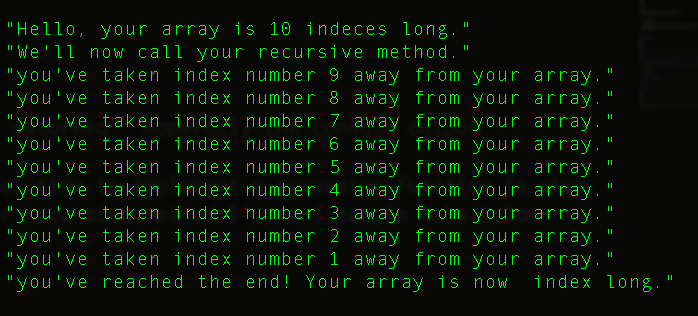

Hey boots! Let's learn about one of the most difficult topics I've yet encountered in my short career at DBC! Sound enticing? I bet it does. Read on to find out about the awesomness of recursion!
Recursion is a techniqe in computer programming wherein a function or method calls to itself to complete some task. In a lot of instances, the same tasks could be performed via iteration, but recursive functions provide a more clean aesthetic--in the sense that these functions typically require fewer lines of code. The downside to using recursive fucntions is that in some instances, they can take longer to perform the same tasks that a loop could do relatively quickly.
In order for a recursive function to work properly, it has to have a bailout condition, otherwise the function will call to itself infinitely causing an infinite loop. This will make any program crash. Check out the recursive method I've written below (in Ruby). It demonstrates all that I've explained previously about recursive functions: It loops, it calls to itself, and it has a bailout condtion.
array = (1..10).to_a
p "Hello, your array is #{array.length} indeces long."
p "We'll now call your recursive method."
def recursive(array)
if array.length == 1
p "you've reached the end! Your array is now #{array.at(1)} index long."
else array.pop
p "you've taken index number #{array.length} away from your array."
recursive(array)
end
end
When you call to recursive(array) in the console, the following is returned:

Hopefully the console output demonstrates the process of this method. Some authorities on the internet agree that a useful time to implement a recursive function is when you're dealing with factorials. Check out the other recursive method I've written in Ruby below:
def factorial(x)
if x == 1
p "All done!"
else
x = x * factorial(x-1)
end
return x
end
The above method essentially decrements the parameter its passed (without express language telling it to like --) by virtue of the fact that it calls on itself on the parameter - 1. It stores the value of the parameter times the parmeter minus one, and then it calls on itself until the arguments reaches the break condition. This is the result of calling factorial(5) in the console: